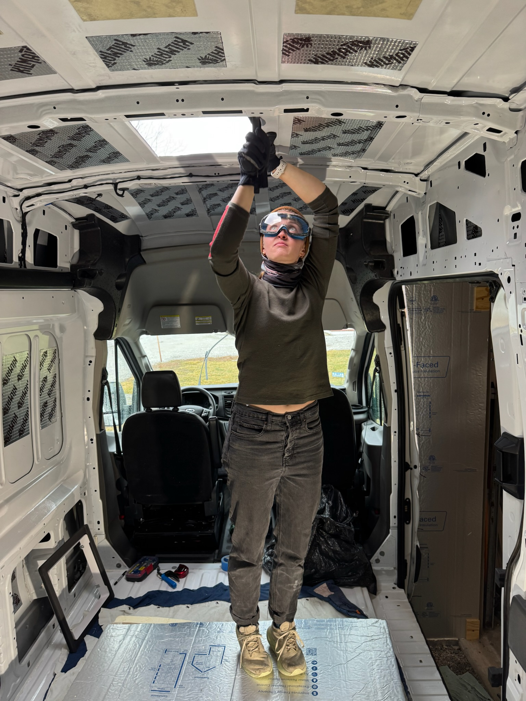
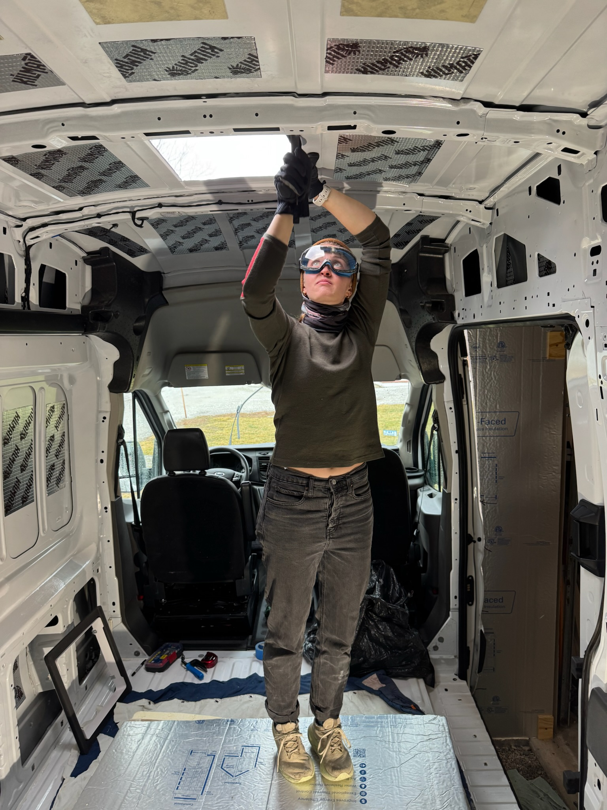

Body mod day(s)
ceiling fan
We have our rear windows installed, but we also need a ceiling fan to really get good airflow going! Before installing the fan, though, we needed to fix the rusty roof that we discovered. After sanding down to the bare metal, we did three layers of spray paints to match the car. Since we do not have roof racks and it’s a bit wobbly up there, I was therefore nominated for roof tasks as the smallest in the bunch.
Now for the fun bit, cutting more holes in the roof! We placed out our 14x14 cutout by the kitchen to help us ventilate while cooking with our propane stovetop (stay tuned to see our cute two burner). We drilled out corner holes and used the jigsaw to connect the dots. For the first time in my life, my dad told me to shut my mouth. But…he had good reason to as there were lots of tiny metal shavings raining down on us.
 

Okay, I lied, being on the roof with a power tool was the most fun bit. We dry fit our adaptor (the black thing that turns our ribbed roof into a flat surface) and the flange for the fan. After clamping it down, I drilled our screw holes for securing the fan. We then deburred, filed, and rust-prevention painted as always.
And now for the least fun bit, caulking. We used sikaflex to adhere the adapter to the roof and butyl tape to adhere the flange to the adapter. While putting our screws in, though, we realized we overshot how much adhesive to put in and half of our screws were no longer long enough to get all the way through. We also had our first van visitor (shoutout to Page) arrive during this first moment of van chaos. We just had to hope that everything was in the right place and that when we came back later it wouldn’t be too much of a pain to get the screws through!
We came back the next morning with long-enough screws, fully secured the fan, and applied a layer of self-leveling lap sealant. Turns out that self-leveling is a lot harder to achieve in freezing temps, but the end result was decent and we have a waterproof and functional ceiling fan!